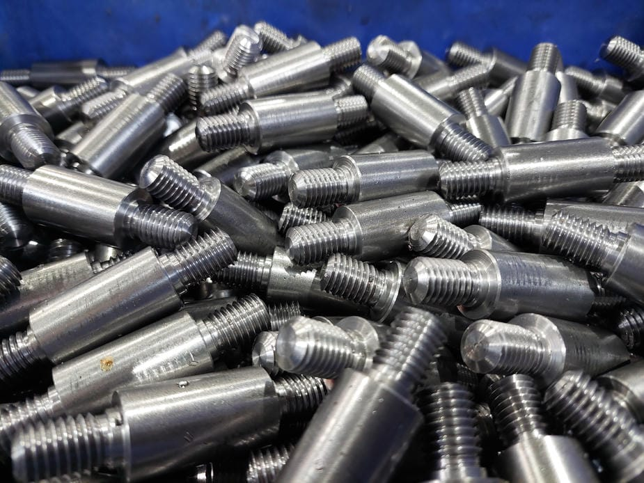
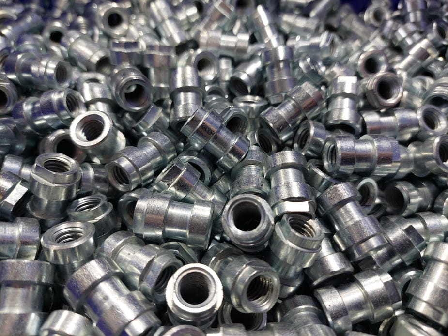
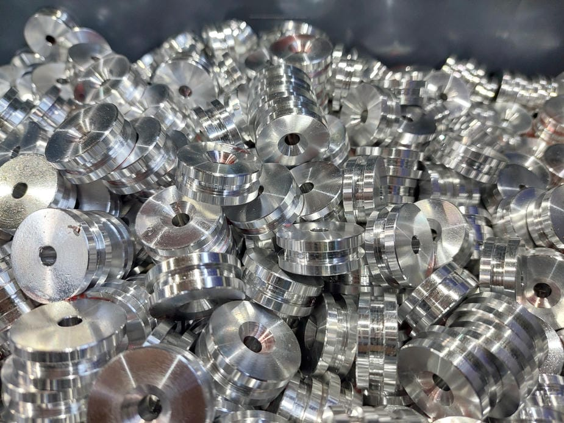
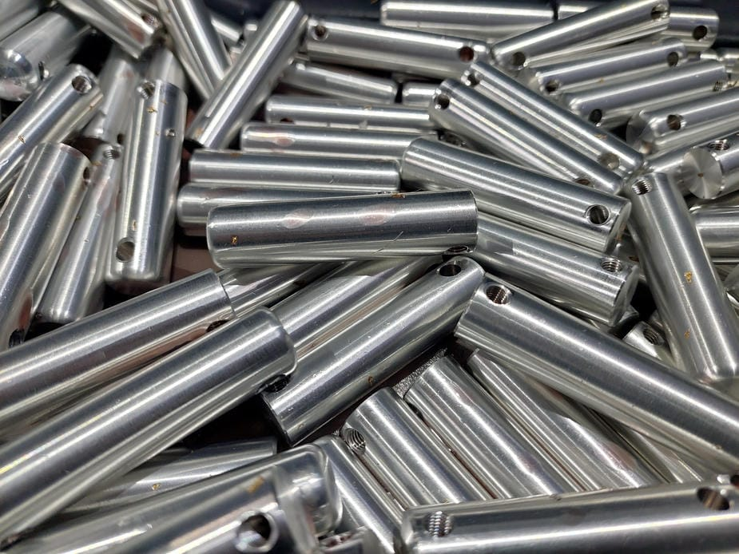
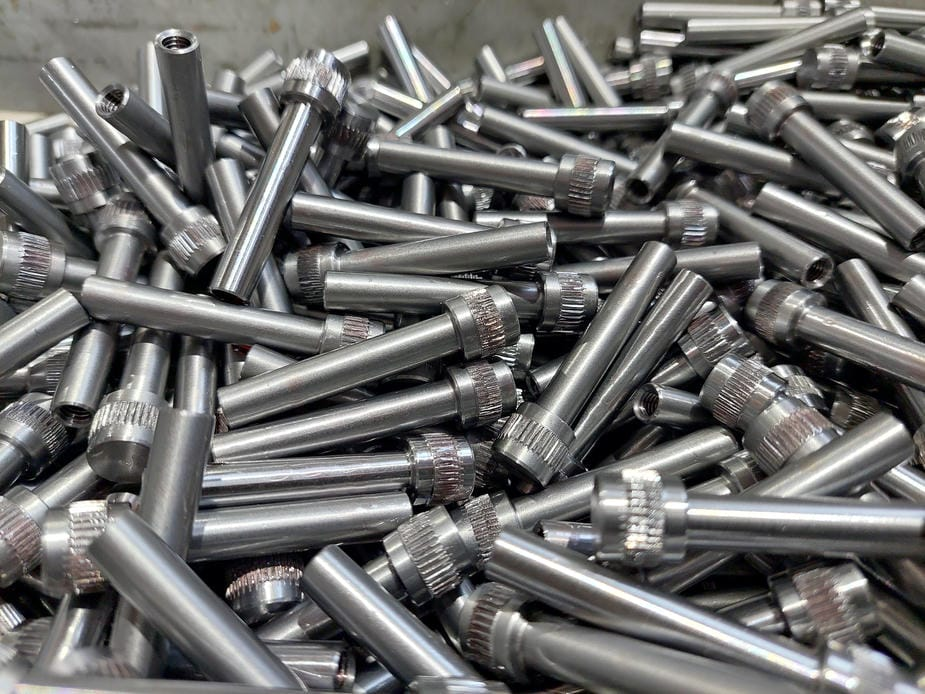
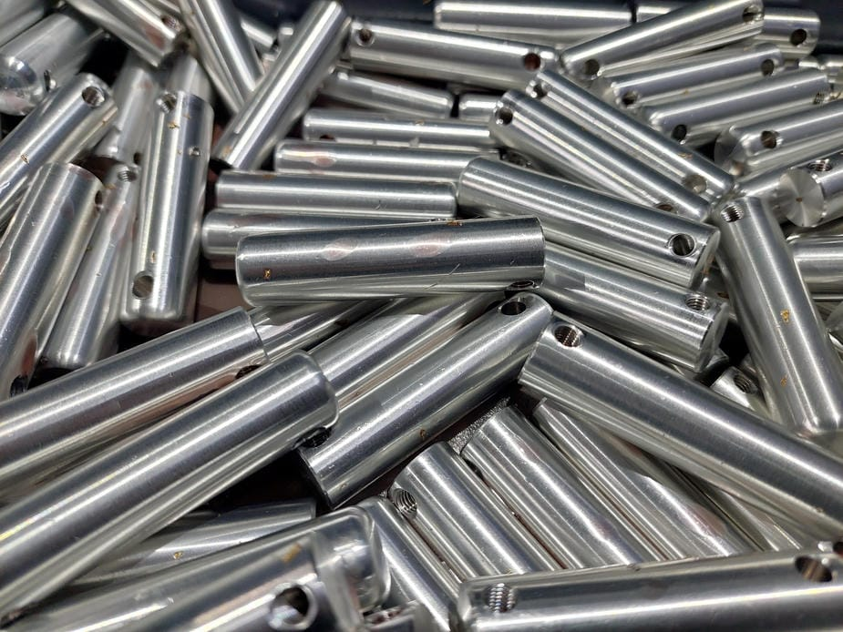
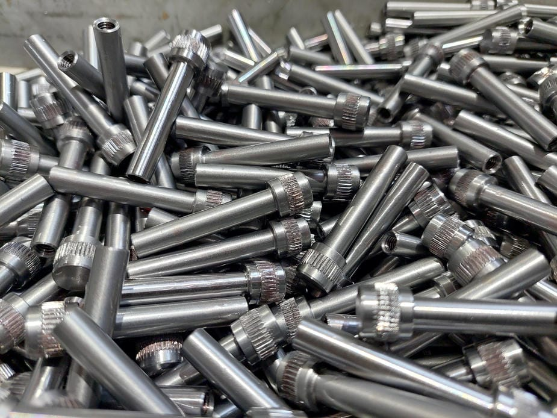
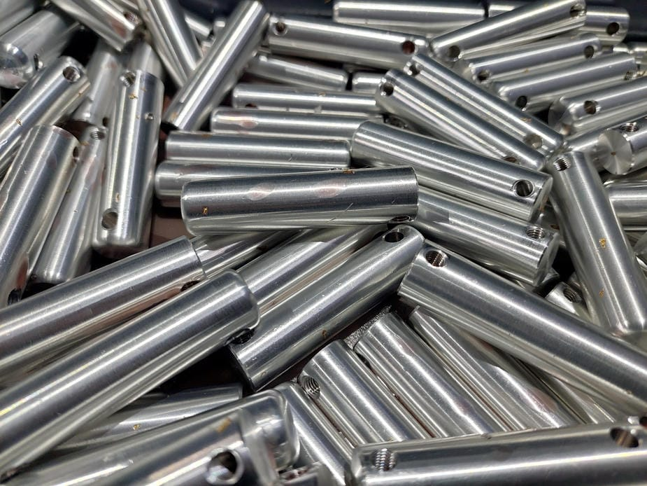
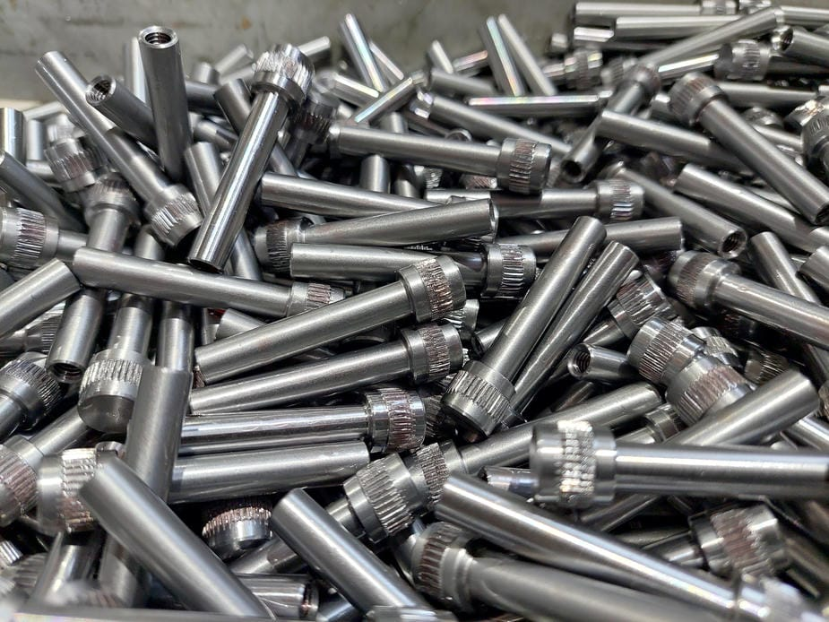

Precision CNC Manufacturing
Prospect CNC manufactures precision turned and machined components for repeat production and volume supply.
What we offer
- CNC Precision Turned Parts
- CNC Sliding Head Machining
- CNC Fixed Head Turning
- CNC Machining
- Volume Machine Parts
Standards & quality
We focus on repeatability, controlled processes, and consistent output. Parts are manufactured to specification with dependable lead times and clear communication.
Gallery



 





Contact
Phone
+44 (0) 7351 869227
Email
info@prospectcnc.co.uk
Address
Unit A2, Halesfield 21, Telford, TF7 4NX, UK